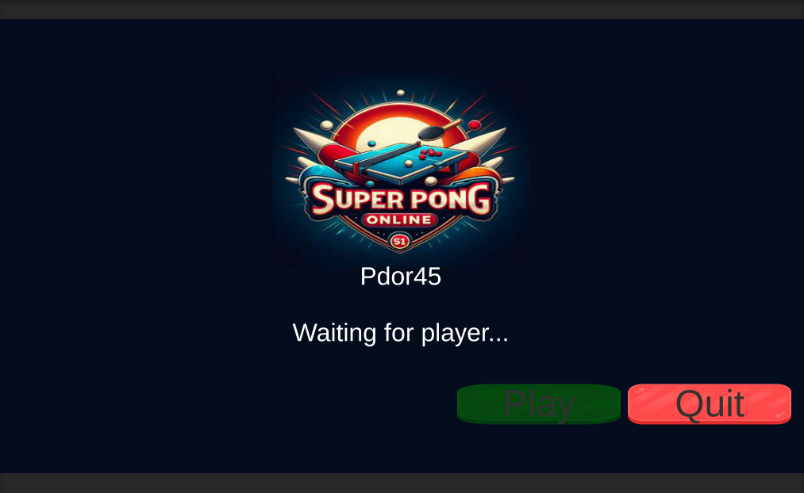
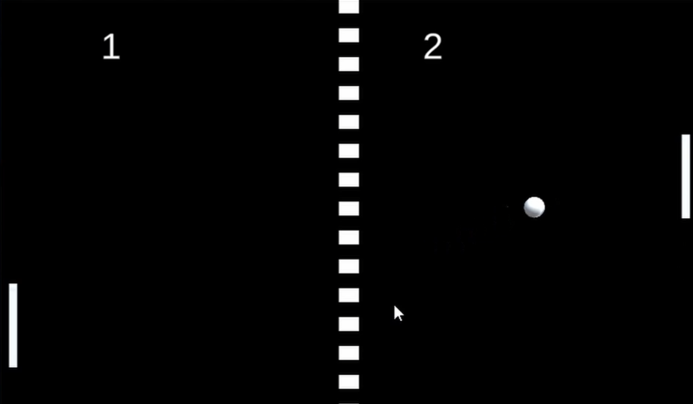

FlowGame Manager
Coordinates match phases and keeps the progression of the game synchronized across clients.
MULTIPLAYER EXAM PROJECT
A networked Pong remake built to learn state synchronization, Mirror networking and Steam-based player connectivity.
The scope was intentionally small so I could focus on the multiplayer layer instead of content production.
The match keeps gameplay states synchronized between clients while Mirror handles network communication and Steam APIs provide player connection and matchmaking integration.

Coordinates match phases and keeps the progression of the game synchronized across clients.
Synchronizes player and match state and handles client/server communication.
Provides player connection and matchmaking support around the multiplayer session.
Ball, score and game progression are treated as shared state instead of independent local simulations.

This project gave me a concrete foundation in ownership, shared state and multiplayer game flow before moving into larger Unity networking systems.